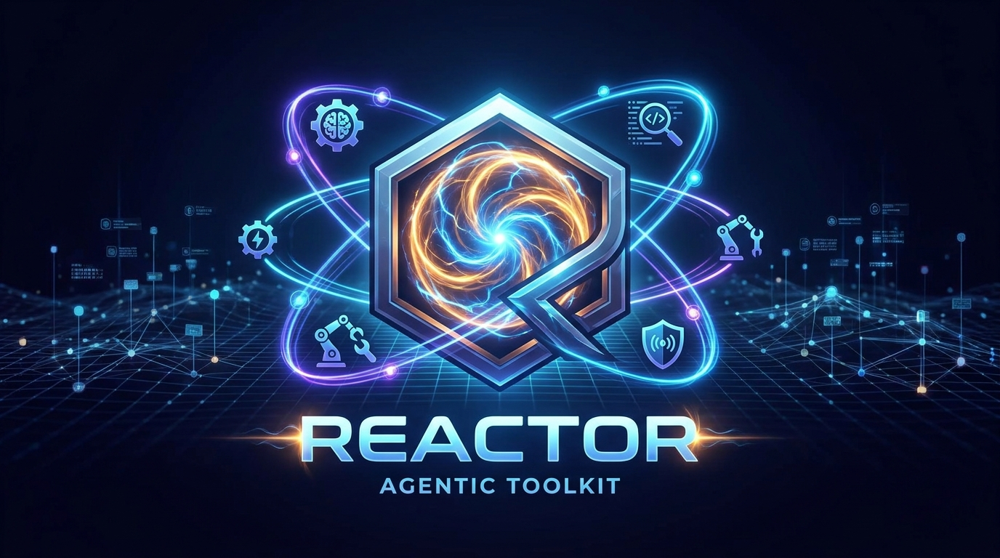
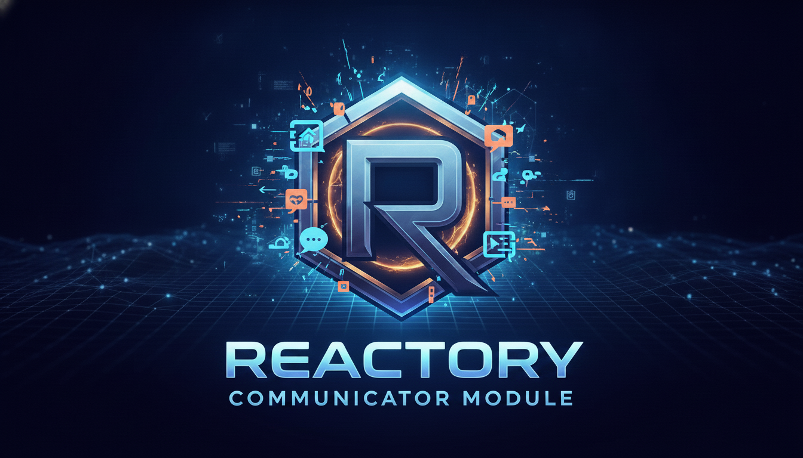
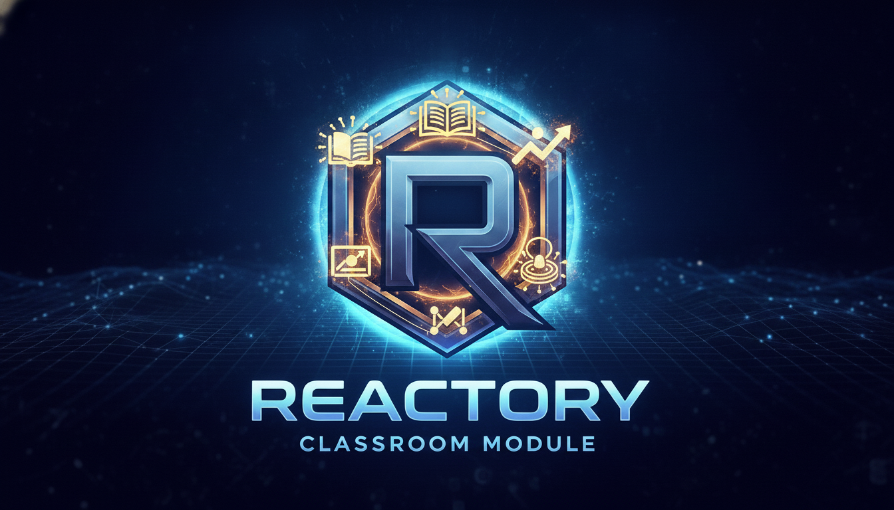
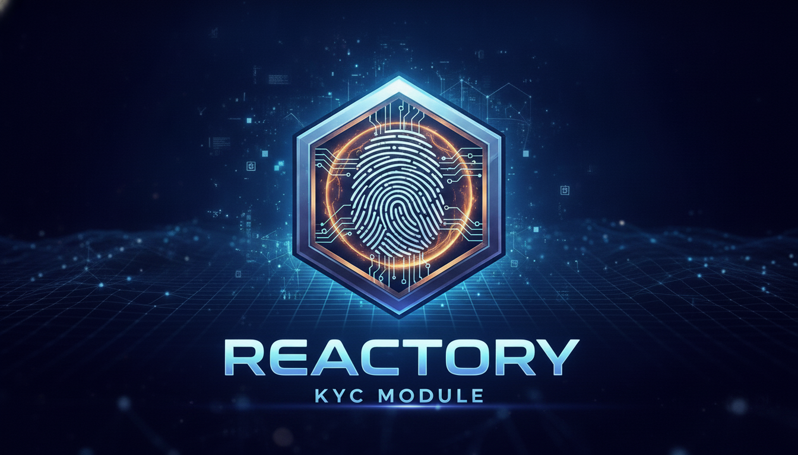

Why Reactory?
Rapid Integration
Connect enterprise systems, APIs, and third-party services 60% faster with pre-built adapters and a unified data layer.
Modular Architecture
Deploy only what you need. Add capabilities on-demand without redeploying the entire platform. Pay only for what you use.
Code-Free Extensions
Business teams can extend the platform using JSON schemas and YAML workflows—no custom code required for common integrations.
Enterprise Ready
Multi-tenant architecture, GraphQL API, OpenTelemetry observability, and RBAC built-in from the ground up.
AI-Powered Development
Leverage Reactor module for code generation, intelligent automation, and guided development workflows.
Cross-Platform
Single backend serving web (React PWA), native mobile (React Native), and desktop (Electron) clients.
Reactory vs Traditional Engineering
See how Reactory accelerates development compared to traditional approaches, even when using AI assistance.
The Reactory Advantage
Platform Architecture
Built on Proven Patterns
- Microkernel Architecture: Extensible plugin system for adding capabilities without modifying core
- Schema-Driven: JSON Schema defines interfaces; forms, workflows, and data structures auto-generate
- Event-Driven: Queue-based asynchronous processing for scalable workflows and integrations
- Multi-Tenant: Complete isolation and resource management for multiple customers from a single deployment
- Observable: Built-in OpenTelemetry metrics, distributed tracing, and custom telemetry
- Composable: Services connect via GraphQL queries and mutations—no hard dependencies
Integrated Modules
Deploy the modules your business needs. Each is fully isolated and can scale independently.




Enterprise Integration Ready
Connect to your entire technology stack with pre-built adapters and extensible API interfaces.
Extensibility Framework
Build and deploy custom modules in minutes using the Reactory SDK. Here's the process:
SDK Features:
- ✓ TypeScript first with full type safety
- ✓ Dependency injection container built-in
- ✓ GraphQL resolver generation from types
- ✓ Event system for cross-module communication
- ✓ YAML workflow orchestration support
- ✓ Built-in caching and queue integration
What This Means for Your Business
Scale your platform in parallel with business growth. Add features, integrations, and modules on your own timeline. No rearchitecting, no redeployment of the entire system.
Business Impact
How We Reduce Integration Costs
Pre-Built Adapters
Eliminate weeks of integration work with ready-to-use connectors for popular services and APIs.
Shared Infrastructure
One platform provides observability, queuing, messaging, and authentication—no separate tools to manage.
Schema-Driven Development
Define once, generate forms, APIs, and workflows automatically. Reduce boilerplate code by 70%.
Vendor Lock-In Prevention
Open-source friendly. Easy to customize, fork, or migrate. Your data, your control.
Common Use Cases
Click on any use case to learn how Reactory enables each solution
SaaS Platforms
Multi-tenant applications with rapid feature deployments, custom integrations, and AI-powered workflows.
Enterprise Suites
ERP, CRM, HCM extensions with compliance, audit trails, and enterprise-grade scalability built-in.
Digital Transformation
Modernize legacy systems without replacement. Connect, adapt, and extend existing infrastructure.
Customer Ecosystems
B2B platforms, partner portals, and network effects with white-labeling and configurable workflows.
AI-First Applications
Integrate LLMs, voice, computer vision, and intelligent automation into any workflow or process.
Compliance & Governance
Built-in audit logs, RBAC, encryption, and regulatory frameworks (KYC, financial reporting, etc.).
Ready to Transform Your Development?
Join enterprise organizations reducing integration costs and accelerating time-to-market with Reactory.